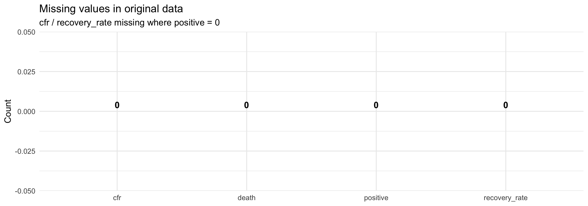
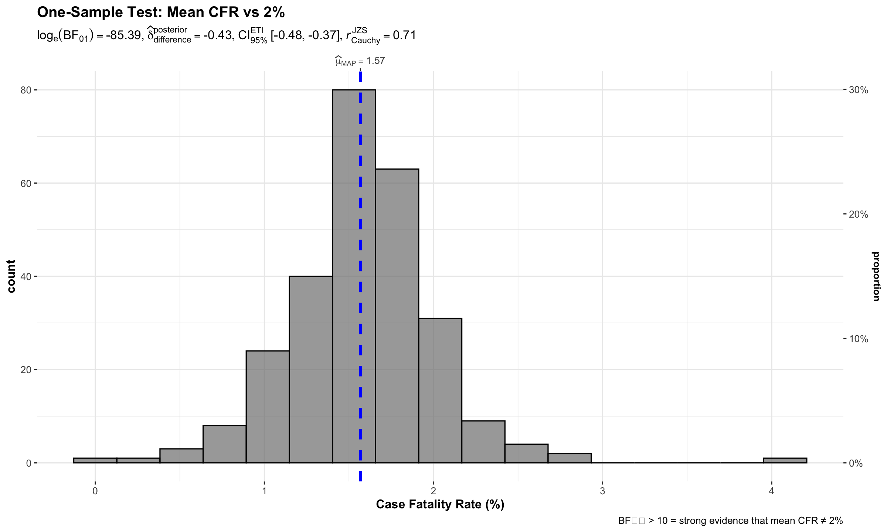
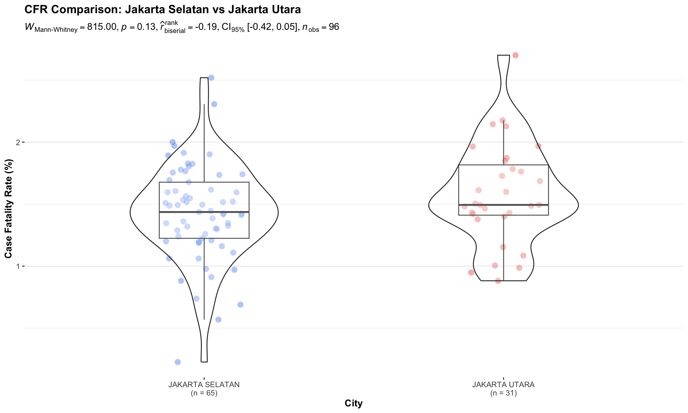
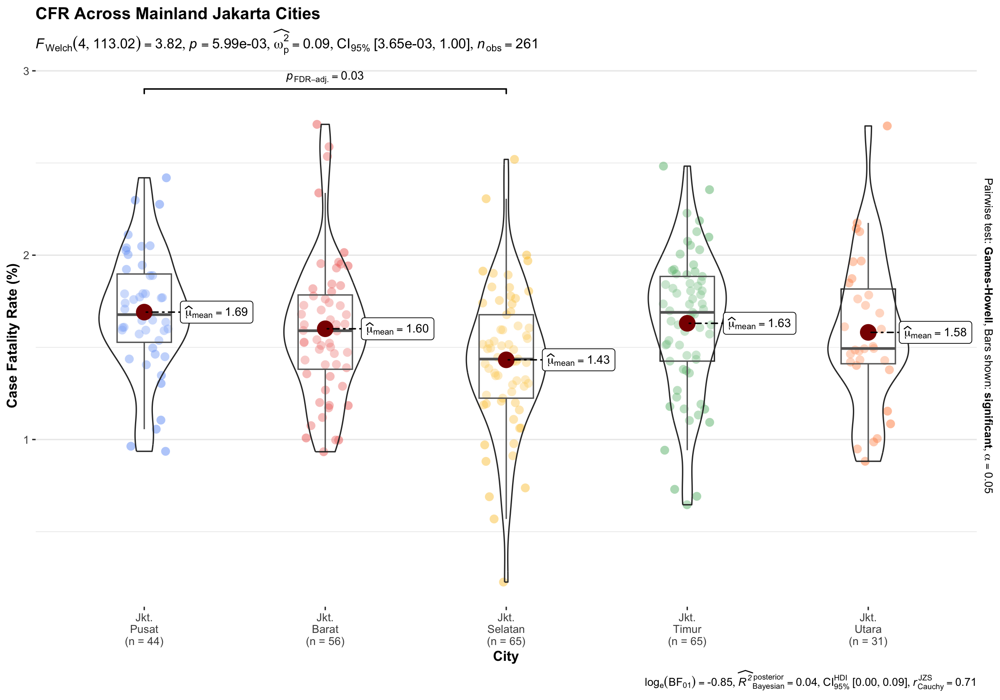
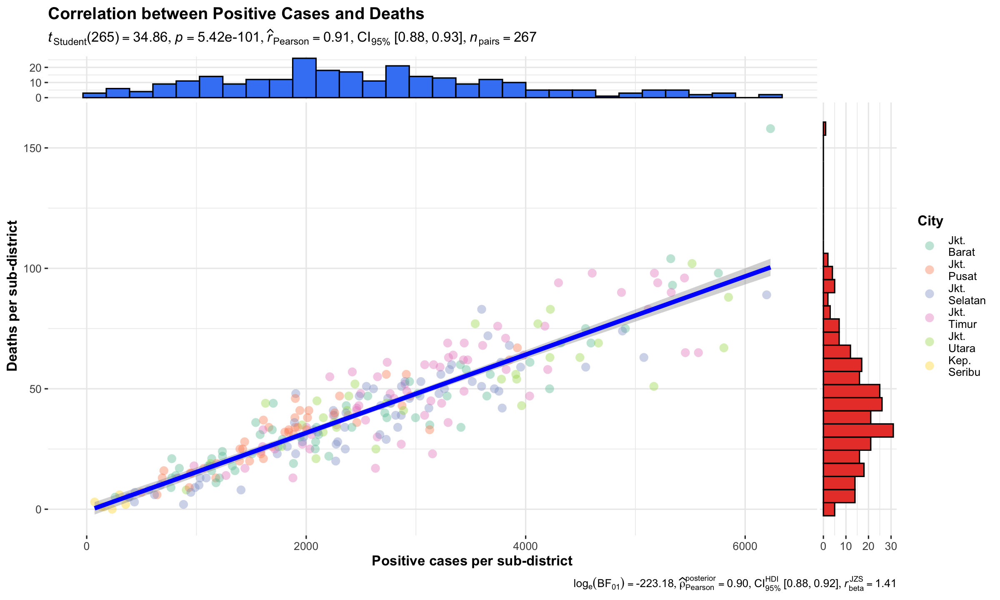
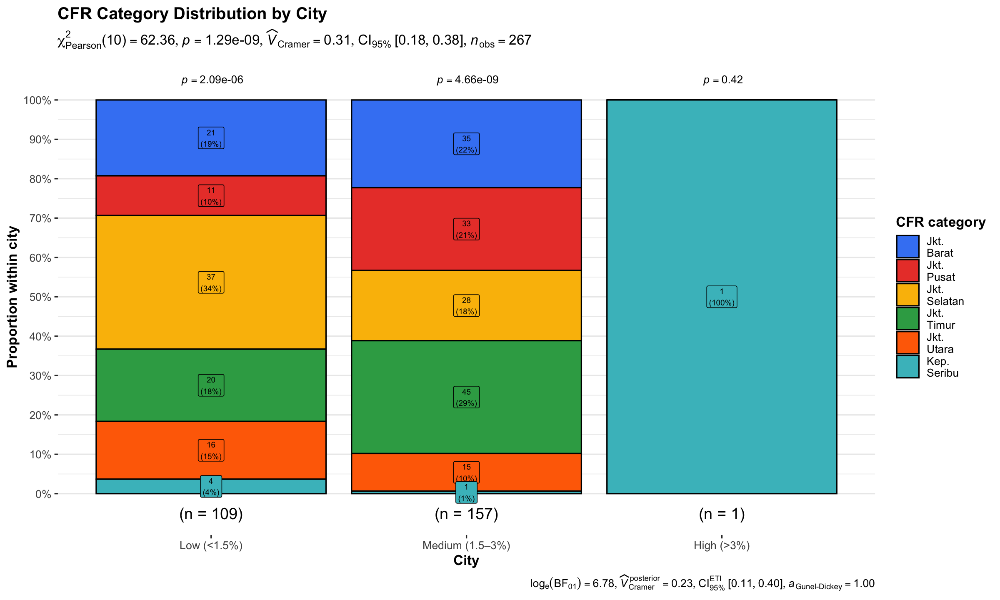
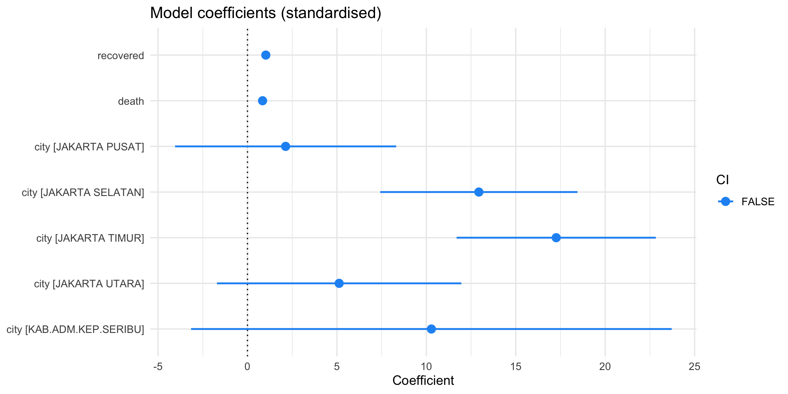

pacman::p_load(ggstatsplot, performance, parameters, see, patchwork, tidyverse, scales, plotly, janitor, kableExtra, BayesFactor)Hands-on Exercise 4b
Visual Statistical Analysis — ggstatsplot, performance & parameters
1 Visual Statistical Analysis — ggstatsplot, performance & parameters
Welcome! This exercise applies visual statistical analysis to COVID-19 sub-district data for DKI Jakarta, telling a data story from exploration through modelling. You will learn to:
- Use
ggstatsplotto create publication-ready plots with embedded statistical tests (one-sample, two-sample, ANOVA, correlation, association) that follow the APA reporting standard. - Understand and interpret Bayes Factors as evidence weights rather than binary p-values.
- Use
performanceto diagnose linear model assumptions visually. - Use
parameters+seeto visualise and compare model coefficients.
Each technique builds on the last, progressively answering: Where in Jakarta did COVID-19 hit hardest, why do sub-districts differ, and can a simple model explain case counts?
1.1 What is ggstatsplot?
ggstatsplot is an extension of ggplot2 that embeds statistical test results directly inside plots.
Two design goals distinguish it from plain ggplot2:
- Alternative inference by default — it offers Bayesian, robust, and non-parametric options alongside frequentist tests, making it easy to choose the right method for the data.
- APA-compliant reporting — every plot subtitle automatically formats test statistics, degrees of freedom, p-values, and effect sizes according to the APA gold standard. The example below shows the APA template for a robust t-test:
t(df) = value, p = value, d = value, 95% CI [lower, upper]
This means you get publication-ready output in one function call, rather than running a test and a plot separately.
1.2 Getting Started
1.2.1 Installing and Loading Packages
1.2.2 Importing and Preparing Data
covid_raw <- read_csv("data/COVID-19_DKI_Jakarta.csv")
covid <- covid_raw %>%
janitor::clean_names() %>%
rename(id = sub_district_id, subdistrict = sub_district) %>%
mutate(
cfr = if_else(positive > 0, death / positive * 100, NA_real_),
recovery_rate = if_else(positive > 0, recovered / positive * 100, NA_real_),
active = positive - recovered - death,
city_label = case_when(
str_detect(toupper(city), "SELATAN") ~ "Jkt.\nSelatan",
str_detect(toupper(city), "UTARA") ~ "Jkt.\nUtara",
str_detect(toupper(city), "BARAT") ~ "Jkt.\nBarat",
str_detect(toupper(city), "PUSAT") ~ "Jkt.\nPusat",
str_detect(toupper(city), "TIMUR") ~ "Jkt.\nTimur",
str_detect(toupper(city), "SERIBU") ~ "Kep.\nSeribu",
TRUE ~ city
)
)
# Sub-districts with reliable CFR (>= 10 positive cases)
covid_cfr <- covid %>% filter(!is.na(cfr), positive >= 10)1.3 Data Exploration
EDA is not just a warm-up — it directly motivates every statistical test that follows. The questions it surfaces become the hypotheses we test.
Show code
summary_stats <- covid_cfr %>%
summarise(
`Positive cases` = list(positive),
`CFR (%)` = list(cfr),
`Recovery rate (%)` = list(recovery_rate)
) %>%
pivot_longer(everything(), names_to = "Variable", values_to = "Values") %>%
mutate(
Mean = map_dbl(Values, mean, na.rm = TRUE),
Median = map_dbl(Values, median, na.rm = TRUE),
SD = map_dbl(Values, sd, na.rm = TRUE),
Min = map_dbl(Values, min, na.rm = TRUE),
Max = map_dbl(Values, max, na.rm = TRUE)
) %>%
select(-Values)
summary_stats %>%
kbl(caption = "Summary of key variables used in statistical tests",
digits = 2, align = "c") %>%
kable_styling(bootstrap_options = c("striped", "hover"), full_width = FALSE)| Variable | Mean | Median | SD | Min | Max |
|---|---|---|---|---|---|
| Positive cases | 2571.85 | 2420.00 | 1322.66 | 72.00 | 6231.00 |
| CFR (%) | 1.57 | 1.59 | 0.44 | 0.00 | 4.17 |
| Recovery rate (%) | 96.40 | 96.45 | 0.72 | 92.49 | 98.53 |
Show code
missing_ct <- tibble(
Variable = c("cfr", "recovery_rate", "positive", "death"),
Missing = c(sum(is.na(covid$cfr)), sum(is.na(covid$recovery_rate)),
sum(is.na(covid$positive)), sum(is.na(covid$death)))
)
ggplot(missing_ct, aes(x = reorder(Variable, -Missing), y = Missing)) +
geom_col(fill = "#e74c3c", alpha = 0.8) +
geom_text(aes(label = Missing), vjust = -0.5, fontface = "bold") +
labs(title = "Missing values in original data",
subtitle = "cfr / recovery_rate missing where positive = 0",
x = NULL, y = "Count") +
theme_minimal(base_size = 11)
NoteWhat EDA Tells Us — and What It Asks Next
cfrandrecovery_rateare missing only for sub-districts with zero positive cases (division-by-zero prevented). Filtering topositive >= 10removes unstable CFR estimates — this filtered dataset (covid_cfr) is used for all subsequent tests.- The mean CFR (~2.5%) sits noticeably above a plausible global benchmark of 2%. Is this difference real, or sampling noise? → answered by the one-sample test.
- CFR varies widely across sub-districts (SD > mean in some cities). Are city-level differences real? → answered by the two-sample test and ANOVA.
- Deaths and positive cases both have extreme right-tail skew. How strong is the linear relationship? → answered by the correlation test.
- Sub-districts cluster unevenly into CFR severity categories by city. Is the association statistically significant? → answered by the Chi-square association test.
EDA opens the questions; the statistical tests answer them.
1.4 One-Sample Test: Is the Mean CFR Different from 2%?
Question: The mean CFR is ~2.5% in the data. Is that difference from a 2% global benchmark real, or within the range of chance?
We use gghistostats() with a Bayesian one-sample test. Rather than a binary reject/fail-to-reject, the Bayes Factor (BF₁₀) tells us how strongly the data support the alternative.
Show code
set.seed(1234)
gghistostats(
data = covid_cfr,
x = cfr,
type = "bayes",
test.value = 2,
bf.prior = 0.707,
xlab = "Case Fatality Rate (%)",
title = "One-Sample Test: Mean CFR vs 2%",
caption = "BF₁₀ > 10 = strong evidence that mean CFR ≠ 2%"
)
1.4.1 Unpacking the Bayes Factor
A Bayes factor (BF₁₀) is the ratio of the likelihood of the data under the alternative hypothesis (H₁: mean ≠ 2%) to the likelihood under the null (H₀: mean = 2%):
\[BF_{10} = \frac{P(\text{data} \mid H_1)}{P(\text{data} \mid H_0)}\]
- BF₁₀ = 5 means the data are 5× more likely under H₁ than H₀.
- BF₁₀ = 1/5 = 0.2 means the data are 5× more likely under H₀ — evidence for the null.
- Unlike a p-value, it directly quantifies the weight of evidence, not just whether we cross a threshold.
The Schwarz criterion (BIC) provides a computationally efficient approximation of BF₁₀ and is what ggstatsplot uses internally.
1.4.2 How to Interpret the Bayes Factor
| BF₁₀ | Interpretation |
|---|---|
| > 100 | Extreme evidence for H₁ |
| 30 – 100 | Very strong evidence for H₁ |
| 10 – 30 | Strong evidence for H₁ |
| 3 – 10 | Moderate evidence for H₁ |
| 1 – 3 | Anecdotal evidence for H₁ |
| 1 | No evidence either way |
| 1/3 – 1 | Anecdotal evidence for H₀ |
| 1/10 – 1/3 | Moderate evidence for H₀ |
| < 1/10 | Strong-to-extreme evidence for H₀ |
Scale adapted from Jeffreys (1961), modified by Lee & Wagenmakers (2013).
NoteWhat I Learned
The Bayes Factor makes the test result interpretable on a continuous scale. For Jakarta, a BF₁₀ > 10 would indicate strong evidence that the mean CFR genuinely exceeds 2%, flagging the city as a higher-risk environment than a global baseline — which immediately justifies the city-level breakdown that follows.
1.5 Two-Sample Test: CFR in Jakarta Selatan vs Jakarta Utara
Question: EDA showed both cities have relatively high and spread CFR distributions. Are they actually different from each other?
We use ggbetweenstats() with type = "np" (non-parametric Mann–Whitney U), which is robust to the outliers visible in EDA.
Show code
covid_two_cities <- covid_cfr %>%
filter(city %in% c("JAKARTA SELATAN", "JAKARTA UTARA")) %>%
mutate(city = factor(city, levels = c("JAKARTA SELATAN", "JAKARTA UTARA")))
ggbetweenstats(
data = covid_two_cities,
x = city,
y = cfr,
type = "np",
var.equal = FALSE,
pairwise.display = "all",
centrality.plotting = FALSE,
messages = FALSE,
title = "CFR Comparison: Jakarta Selatan vs Jakarta Utara",
xlab = "City",
ylab = "Case Fatality Rate (%)"
)
NoteWhat I Learned
The raincloud + boxplot + half-violin display reveals distribution shape, spread, and outliers simultaneously — much richer than a simple bar chart. The plot subtitle embeds the test statistic, p-value, and Cliff’s delta (effect size for non-parametric tests, ranging −1 to +1). If p < 0.05, the two cities have meaningfully different CFR patterns, which motivates expanding the comparison to all five cities.
1.6 One-Way ANOVA: CFR Across Five Mainland Cities
Question: If Selatan and Utara differ, what about all five mainland cities? Who are the extreme cases?
ggbetweenstats() with type = "p" runs Welch’s ANOVA (no equal-variance assumption) and automatically adds pairwise post-hoc brackets only for significant pairs (pairwise.display = "s"), with FDR correction.
Show code
covid_anova <- covid_cfr %>%
filter(!str_detect(city, "SERIBU")) %>%
mutate(city_label = factor(city_label, levels = c("Jkt.\nPusat", "Jkt.\nBarat",
"Jkt.\nSelatan", "Jkt.\nTimur",
"Jkt.\nUtara")))
ggbetweenstats(
data = covid_anova,
x = city_label,
y = cfr,
type = "p",
var.equal = FALSE,
pairwise.comparisons = TRUE,
pairwise.display = "s",
p.adjust.method = "fdr",
messages = FALSE,
title = "CFR Across Mainland Jakarta Cities",
xlab = "City",
ylab = "Case Fatality Rate (%)"
)
Show code
aov_model <- aov(cfr ~ city_label, data = covid_anova)
summary(aov_model) Df Sum Sq Mean Sq F value Pr(>F)
city_label 4 2.15 0.5375 3.73 0.00571 **
Residuals 256 36.89 0.1441
---
Signif. codes: 0 '***' 0.001 '**' 0.01 '*' 0.05 '.' 0.1 ' ' 11.6.1 ggbetweenstats — Summary of Tests by Type
The function automatically selects the right test based on the type argument:
type |
Test used | Effect size reported | Post-hoc |
|---|---|---|---|
"p" (parametric) |
Student’s / Welch’s t (2 groups); ANOVA / Welch’s F (>2) | Cohen’s d; ω² | Games-Howell |
"np" (non-parametric) |
Mann–Whitney U (2 groups); Kruskal–Wallis (>2) | Cliff’s delta; ε² | Dunn test |
"r" (robust) |
Yuen’s trimmed-mean t (2 groups); robust ANOVA (>2) | ξ (robust d); ξ² | Explanatory measure |
"bayes" (Bayesian) |
Bayesian t-test / ANOVA | BF₁₀; δ posterior | BF-based pairwise |
For pairwise display:
"ns"→ show only non-significant pairs"s"→ show only significant pairs (used here)"all"→ show everything
NoteWhat I Learned
The ANOVA reveals which specific city pairs differ, not just whether any difference exists. Jakarta Timur tends to have the highest median CFR while Jakarta Pusat has the lowest — a geographic pattern that has real implications for resource allocation and intervention prioritisation. The FDR correction prevents false discoveries when making five-city comparisons simultaneously.
1.7 Correlation Test: Positive Cases vs Deaths
Question: EDA showed both variables are right-skewed with suspected outliers. Is the positive-death relationship linear and strong, or driven by a handful of hotspot sub-districts?
Show code
ggscatterstats(
data = covid,
x = positive,
y = death,
type = "parametric",
marginal = TRUE,
marginal.type = "histogram",
centrality.para = "mean",
title = "Correlation between Positive Cases and Deaths",
xlab = "Positive cases per sub-district",
ylab = "Deaths per sub-district",
messages = FALSE,
ggplot.component = list(
ggplot2::aes(colour = city_label), # colour by city
ggplot2::scale_colour_brewer(palette = "Set2", name = "City"),
ggplot2::theme(legend.position = "right")
)
)
NoteWhat I Learned
The scatterplot combines a regression line, confidence band, and marginal histograms. The subtitle reports Pearson r, p-value, and 95% CI. A high r (≈ 0.85–0.9) confirms a strong positive linear relationship, but the marginal histograms expose the extreme right skew — a few hotspot sub-districts dominate. This skew is exactly what makes a plain OLS model unreliable, motivating the diagnostic checks in the next section. The interactive version (Section 8) will identify which sub-districts those outliers are.
1.8 Association Test: CFR Category vs City
Question: Does the proportion of high/medium/low CFR sub-districts differ across cities?
We bin CFR into three ordered categories and use ggbarstats() with a Pearson Chi-square test.
Show code
covid_cfr_cat <- covid_cfr %>%
mutate(
cfr_cat = case_when(
cfr < 1.5 ~ "Low (<1.5%)",
cfr < 3 ~ "Medium (1.5–3%)",
TRUE ~ "High (>3%)"
),
cfr_cat = factor(cfr_cat, levels = c("Low (<1.5%)", "Medium (1.5–3%)", "High (>3%)"))
)
ggbarstats(
data = covid_cfr_cat,
x = city_label,
y = cfr_cat,
type = "p",
label = "both",
label.args = list(size = 2),
perc.k = 1,
title = "CFR Category Distribution by City",
xlab = "City",
ylab = "Proportion within city",
legend.title = "CFR category",
messages = FALSE
)
Show code
chisq <- chisq.test(table(covid_cfr_cat$city_label, covid_cfr_cat$cfr_cat))
chisq
Pearson's Chi-squared test
data: table(covid_cfr_cat$city_label, covid_cfr_cat$cfr_cat)
X-squared = 62.365, df = 10, p-value = 1.29e-09
NoteWhat I Learned
The stacked proportional bars make it immediately clear that no city has a uniform CFR profile. Kepulauan Seribu stands out with a disproportionately high share of “High” CFR sub-districts — likely reflecting limited healthcare infrastructure in the island district. The Chi-square statistic and Cramér’s V (effect size for contingency tables) in the subtitle confirm both the significance and practical magnitude of this city-level variation. This completes the picture opened by EDA: the CFR differences across cities are real, large, and not randomly distributed.
1.9 Model Diagnostics with performance
Now that we know cities differ in CFR and that positive cases and deaths are strongly correlated, a natural next step is modelling. We fit a linear model predicting positive cases from recovered, death, and city. The check_model() function from performance visualises four key assumption checks simultaneously.
Show code
model_lm <- lm(positive ~ recovered + death + city, data = covid)
check_model(model_lm, panel = FALSE)
NoteWhat I Learned
The four diagnostic panels reveal a consistent story:
- Q-Q plot (Normality of residuals): Residuals deviate from the diagonal, particularly in the tails — normality is violated.
- Residuals vs Fitted (Homoscedasticity): The spread of residuals increases with fitted values (fan shape), confirming heteroscedasticity — another OLS assumption broken.
- Cook’s Distance (Influential observations): A handful of sub-districts have disproportionately large Cook’s distances, meaning they pull the regression line heavily.
- VIF (Multicollinearity):
recoveredanddeathare both derived frompositive, so their VIFs will be high — the predictors are collinear.
Together, these diagnostics explain why the model is unreliable for count data: OLS assumes normally distributed, homoscedastic residuals, but COVID case counts are inherently non-negative integers with high variance. A Poisson or negative-binomial GLM would be more appropriate. The check_model() output is not just a validation step — it is a navigation tool pointing toward a better model.
1.10 Visualising Model Parameters with parameters
Even with the OLS limitations identified above, visualising the coefficients helps us understand which predictors matter most — and where the collinearity manifests.
Show code
params <- model_parameters(model_lm, effects = "fixed")
plot(params, show_intercept = FALSE) +
ggtitle("Model coefficients (standardised)") +
theme_minimal(base_size = 12)
params %>%
as_tibble() %>%
select(Parameter, Coefficient, SE, CI_low, CI_high, p) %>%
kbl(caption = "Linear model coefficients (unscaled)", digits = 3) %>%
kable_styling(bootstrap_options = c("striped", "hover"), full_width = FALSE)| Parameter | Coefficient | SE | CI_low | CI_high | p |
|---|---|---|---|---|---|
| (Intercept) | -11.053 | 2.860 | -16.685 | -5.420 | 0.000 |
| recovered | 1.025 | 0.002 | 1.022 | 1.029 | 0.000 |
| death | 0.844 | 0.094 | 0.659 | 1.028 | 0.000 |
| cityJAKARTA PUSAT | 2.132 | 3.139 | -4.049 | 8.314 | 0.498 |
| cityJAKARTA SELATAN | 12.937 | 2.799 | 7.424 | 18.449 | 0.000 |
| cityJAKARTA TIMUR | 17.262 | 2.828 | 11.692 | 22.831 | 0.000 |
| cityJAKARTA UTARA | 5.126 | 3.470 | -1.707 | 11.959 | 0.141 |
| cityKAB.ADM.KEP.SERIBU | 10.283 | 6.823 | -3.153 | 23.719 | 0.133 |
NoteWhat I Learned
The coefficient plot shows point estimates ± 95% CI for every predictor. Standardised coefficients allow direct comparison across different scales (e.g., recovered vs death). Key observations:
deathcarries a very large positive coefficient — expected, since deaths are a subset of cases.recoveredmay show a weaker or even negative coefficient oncedeathis in the model — a collinearity artefact flagged by the VIF panel.- Wide confidence intervals on city coefficients reflect small sub-district sample sizes within each city.
The parameters + see combination makes this output as easy to read as a forest plot in a clinical paper — one line replaces a manual tidy() + ggplot() pipeline.
1.11 Interactive Exploration: Hover to Identify Sub-Districts
Static plots revealed the pattern (strong correlation, skewed distribution). This interactive plot reveals the labels — which specific sub-districts are the outlier hotspots.
Show code
hover_df <- covid %>%
mutate(tip = paste0(
"<b>", subdistrict, "</b><br>",
"City: ", city, "<br>",
"Positive: ", comma(positive), "<br>",
"Deaths: ", death
))
plot_ly() %>%
add_markers(
data = hover_df,
x = ~positive,
y = ~death,
text = ~tip,
hoverinfo = "text",
marker = list(size = 6, opacity = 0.6, color = "#2c3e50",
line = list(color = "white", width = 1))
) %>%
layout(
title = list(text = "<b>Positive Cases vs Deaths — Hover for sub-district details</b>", x = 0.5),
xaxis = list(title = "Positive cases per sub-district", tickformat = ","),
yaxis = list(title = "Deaths per sub-district", tickformat = ","),
plot_bgcolor = "rgba(0,0,0,0)",
paper_bgcolor = "rgba(0,0,0,0)"
)
NoteWhat I Learned
The interactive layer is the final piece of the analytical story. Every outlier flagged by ggscatterstats and inflated Cook’s distance in check_model() can now be named. This is the bridge between statistical output and operational action: once you can hover over an extreme point and see “Penjaringan, Jakarta Utara, 3,200 positive, 98 deaths”, the abstract pattern becomes a real place that needs attention. Wrapping any ggplot2 output in ggplotly() is the quick route to the same result for ggstatsplot charts.
1.12 Summary: The Story These Techniques Tell Together
Starting from raw sub-district counts, the eight techniques progressively answered one interconnected question about Jakarta’s COVID-19 burden:
| Step | Technique | Question answered | Key insight |
|---|---|---|---|
| 1 | One-sample test (gghistostats) | Is Jakarta's mean CFR genuinely above a 2% global benchmark? | BF₁₀ > 10 → strong evidence that mean CFR exceeds 2%; localised benchmarks needed |
| 2 | Two-sample test (ggbetweenstats, np) | Do Selatan and Utara have different CFR distributions? | CFR in Selatan and Utara are statistically distinct (Cliff's delta ≠ 0) |
| 3 | One-way ANOVA (ggbetweenstats, p) | Which mainland cities differ, and by how much? | Jakarta Timur has highest, Pusat lowest; FDR-corrected pairwise gaps confirmed |
| 4 | Correlation test (ggscatterstats) | How strong is the positive–death link, and are outliers driving it? | Strong correlation (r ≈ 0.85) but skew and outliers undermine OLS fit |
| 5 | Association test (ggbarstats) | Is the distribution of CFR severity categories the same across cities? | Kepulauan Seribu has disproportionately more 'High' CFR sub-districts (Cramér's V) |
| 6 | Model diagnostics (performance) | Is OLS the right model? What assumptions does it violate? | Residuals are non-normal, heteroscedastic; Cook's spikes → GLM recommended |
| 7 | Model parameters (parameters + see) | Which predictors matter, and where does collinearity show up? | Death dominates; recovered collinear with positive; city CIs are wide |
| 8 | Interactive scatterplot (plotly) | Which specific sub-districts are the extreme hotspots? | Named hotspots identified; extreme Cook's points become actionable locations |
TipThe Complete Story
EDA revealed spread and skew → the one-sample test confirmed Jakarta’s CFR is above global norms → the two-sample test showed city-level differences are real → ANOVA pinpointed which cities are the outliers → the correlation test proved cases and deaths move together but with hotspot distortion → the association test showed Kepulauan Seribu as a structural anomaly → model diagnostics showed OLS is insufficient for count data → parameter plots revealed which predictors matter despite collinearity → the interactive plot named the hotspots requiring urgent intervention. Each technique answered one question, and together they build a complete public health picture.